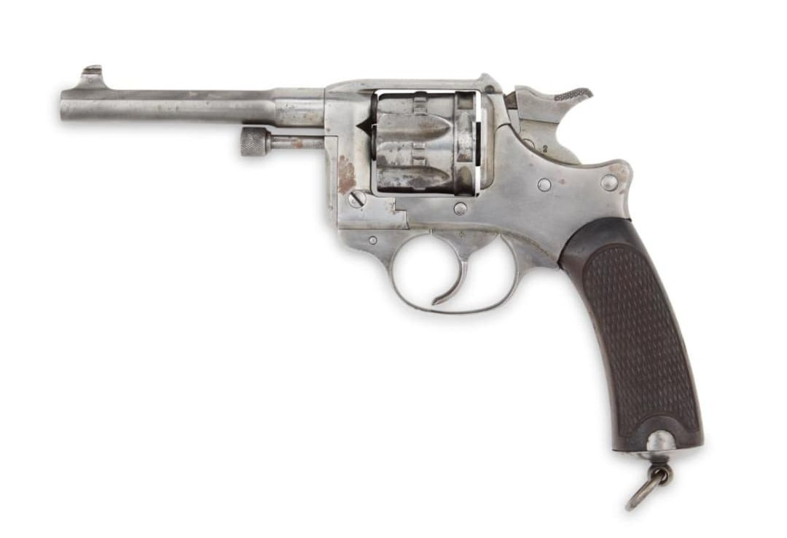

Les armes françaises de la Seconde Guerre mondiale représentent un ensemble varié de modèles issus de plusieurs décennies d’évolution. Entre modernisation rapide, héritage de la Grande Guerre et innovations techniques, l’armement français de 1915 à 1945 reflète une période complexe où coexistent équipements anciens et armes de conception récente.
Cette section du Musée HOP WW2 présente l’ensemble des armes blanches, fusils, pistolets, fusils-mitrailleurs, mitrailleuses et armes d’appui utilisées par les forces françaises durant le conflit. Chaque fiche offre une description détaillée, des photographies, et les éléments permettant d’identifier un modèle authentique.
Le revolver modèle 1892, souvent appelé « Lebel 1892 », est l’arme de poing réglementaire de l’armée française durant la Première Guerre mondiale. En 1939–1940, il reste encore largement utilisé par les officiers, sous-officiers, gendarmes, troupes coloniales et certaines unités de réserve.
Chambré en 8 mm 92, il se distingue par sa mécanique précise, son barillet basculant (innovation majeure à l’époque) et sa finition de haute qualité. Malgré son âge, il reste une arme fiable et appréciée.

Adopté en 1892, ce revolver accompagne les officiers français durant toute la Première Guerre mondiale. Sa précision et sa fiabilité lui valent une longue carrière.
En 1939–1940, il reste en service dans de nombreuses unités, notamment la gendarmerie, les troupes coloniales, les équipages de chars et les formations de réserve. Il est progressivement remplacé après-guerre par le MAC 1950.